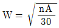
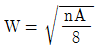
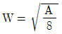
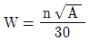
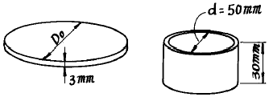
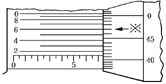
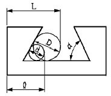

사출(프레스)금형산업기사 (2002-09-08 기출문제)
1과목: 금형설계
1. 사출성형용 금형에서 고정측 형판과 이동측 형판 및 러너스트리퍼 플레이트 등의 가이드와 금형보호의 역할을 목적으로한 부품은?
- 리턴 핀
- 가이드 핀
- 스페이셔 블록
- 이젝터 플레이트
(정답률: 65%)

2. 다음 중에서 비결정성 수지는?
- PP
- PA
- PE
- PS
(정답률: 49%)
3. 베리륨동(Be-Cu)의 장점 중 옳은 것은?
- 가공성이 좋지 않다.
- 열처리하기 좋지 않다.
- 경도가 아주 높다.
- 열전도율이 좋다.
(정답률: 63%)
4. 핀 이젝터 방식의 장점으로 볼 수 없는 것은?
- 호환성이 좋다.
- 설치가 용이하다.
- 금형의 정도를 해친다.
- 가공이 쉽다.
(정답률: 92%)
5. 다음 중 사출속도가 너무 빠르기 때문에 발생되는 불량현상은?
- 싱크마크
- 풀로마크
- 제팅
- 충전부족
(정답률: 83%)
6. 사출 성형기의 성능을 나타내는 수치가 아닌것은?
- 사출용량
- 캐비티 용량
- 가소화 용량
- 형체결력
(정답률: 75%)
7. 원통형 성형품의 코어 휨을 방지하기 위한 게이트로 적합한 것은?
- 필름 게이트
- 핀포인트 게이트
- 서브마린 게이트
- 링 게이트
(정답률: 61%)
8. 사출 성형에서 품질 좋은 성형품을 얻기 위해서는 캐비티의 온도를 재료 특성에 맞는 온도로 조절하여 효과적으로 열을 흡수해야 한다. 다음 중 온도 조절 효과가 아닌 것은?
- 물리적 성질을 개선할 수 있다.
- 외관적 결함을 방지할 수 있다.
- 수지를 절약할 수 있다.
- 치수 품질이 안정된다.
(정답률: 67%)
9. 나사가 있는 성형품의 빼기방법 중에서 성형품의 나사부에 파팅라인이 있어도 지장이 없고, 정밀도를 필요로 하지 않는 경우 사용하는 방법은?
- 교환형 코어에 의한 방법
- 분할형에 의한 방법
- 회전기구에 의한 방법
- 강제적으로 빼는 방법
(정답률: 44%)
10. 표준 게이트의 폭을 결정하는 공식은? (단, n= 수지상수, A=성형품 외측의 표면적(mm2)이다.)




(정답률: 79%)
11. 드로잉 금형을 이용하여 그림과 같은 제품을 성형하였다. 이때 블랭크의 직경 Do는 얼마인가?

- 71.5mm
- 84.5mm
- 92.2mm
- 104.2mm
(정답률: 47%)
12. 파워프레스로 공칭압력 50톤, 토크(torque)능력 6mm, 1 스트로크 운전으로 프레스 작업을 할 때 예측되는 일의 에너지는? (단, 유효 에너지이 효율은 70%이다.)
- 210 kgf∙m
- 260 kgf∙m
- 1260 kgf∙m
- 1420 kgf∙m
(정답률: 56%)
13. 프레스금형에서 사용되는 가이드 포스트(guide post)에 대한 설명 중 틀린 것은?
- 가이드 포스트는 정밀하게 가공된 핀의 일종이다.
- 가이드 포스트는 다이 홀더에 정확히 억지끼워맞춤 되어야 한다.
- 가이드 포스트의 재질은 일반적으로 STC4를 사용한다.
- 가이드 포스트의 표면 경도는 HRC40이하 이어야 한다.
(정답률: 65%)
14. 코일소재의 이송장치로 사용되는 금형 부품이 아닌 것은?
- 맞춤핀
- 파일럿 핀
- 리프터 핀
- 가이드 레일
(정답률: 27%)
15. 직경 30mm의 연강 봉재를 전방압출에 의해 직경 20mm로 압출했을때 단면감소율은?
- 33%
- 56%
- 75%
- 125%
(정답률: 44%)
16. 블랭킹 다이구멍에서 가혹한 조건을 받는 부분은 어떻게 보강하면 가장 적합 한가?
- 인서트다이로 하고 표면경화 처리한다.
- 일체형의 다이로 한다.
- 부싱다이로 한다.
- 질화처리 다이로 한다.
(정답률: 74%)
17. 펀치나 다이의 전단각(shear angle)에 대한 설명 중 틀린 것은?
- 전단각(shear angle)을 주면 전단력이 감소한다.
- 전단각의 높이는 보통 소재 두께의1-3배가 적당하다.
- 다이에 전단각을 주면 평평한 블랭크를 얻을수 있다.
- 펀치에 전단각을 주면 평평한 블랭크를 얻을수 있다.
(정답률: 20%)
18. 다음 프레스 가공 분류 중 전단가공 그룹에 속하지 않는 것은?
- 분단
- 블랭킹
- 피어싱
- 엠보싱
(정답률: 72%)
19. 금형의 제작을 계획, 실시, 평가, 처치의 4단계로 나눌때 보유하고 있는 프레스의 형식과 가공능력이 고려되어야 하는 시기는?
- 계획
- 실시
- 평가
- 처치
(정답률: 61%)
20. 펀치의 안내 및 보호와 펀치로부터 스크랩을 제거하는 기능을 하는 부품은?
- Stripper
- Die plate
- Punch plate
- Pilot pin
(정답률: 73%)
2과목: 기계가공법 및 안전관리
21. 초음파 가공시 공구의 진동주파수는?
- 16∼30[㎑]
- 26∼40[㎑]
- 36∼50[㎑]
- 46∼60[㎑]
(정답률: 25%)
22. 강의 열처리 조직중에서 가장 경화된 조직은?
- 오스테나이트
- 트루스타이트
- 마텐자이트
- 소르바이트
(정답률: 69%)
23. 금형 부품중 NC 선반작업으로 가공이 곤란한 부품은?
- 스프루 부시
- 사이드코어 블록
- 로케트 링
- 밀핀
(정답률: 78%)
24. 연삭가공에서 숫돌의 원주속도를 높일 때 일어나는 현상이 아닌 것은?
- 연삭 저항이 적어진다.
- 숫돌의 소모량이 적어진다.
- 연삭량이 없어진다.
- 발열온도가 높아진다.
(정답률: 49%)
25. 공작물을 유지하고 지지하며 기계가공하기 위하여 공작물 위에 설치하는 특수장치를 무엇이라 하는가?
- 바이트
- 맨드릴
- 단동척
- 지그
(정답률: 67%)
26. 드릴의 지름이 18mm, 회전수 400rpm, 날끝 각도가 118°인 고속도강드릴로 연강에 구멍를 가공할 때 절삭속도는?
- 17.69 m/min
- 22.60 m/min
- 26.08 m/min
- 31.4 m/min
(정답률: 77%)
27. 두께 3mm 재료에 지름 20mm의 구멍을 펀칭할때 프레스의 슬라이드 평균속도를 5m/min, 기계 효율을 η=70%로 하면 펀칭의 소요동력은 약 얼마인가? (단, 소재판의 전단저항은 30kgf/mm2이다.)
- 9.0 PS
- 6.3 PS
- 5.0 PS
- 4.4 PS
(정답률: 17%)
28. 방전가공의 특징을 설명한 것이다. 틀린 것은?
- 열처리후 가공이 쉽고 담금질 균열발생이 없다.
- 가공면에 변질 경화층이 생긴다.
- 반드시 전극이 필요하며 전극제작에 숙련이 필요하다
- 가공속도는 재료의 경도에 따라 다르게 작용한다.
(정답률: 19%)
29. 플라스틱 금형으로 성형하는 성형법이 아닌 것은?
- 압축 성형법
- 이송 성형법
- 블로 성형법
- 압인 성형법
(정답률: 43%)
30. 측정온도에 따른 측정기의 변화량을 구하는 식은? (t℃ : 온도변화, λ : 변화량, ℓ : 측정길이, α : 열 팽창계수, E : 세로탄성계수, σC : 압축응력)
- λ = α ℓ t℃
- λ = t℃× α /ℓ
- λ = ℓ α t℃ σC
- λ = E σC
(정답률: 52%)
31. 치공구 사용의 중요한 목적에 속하지 않는 것은?
- 생산제품의 정밀도가 향상되고 호환성을 지닌다.
- 가공작업의 공정을 단축시킨다.
- 숙련자에 의한 정밀 작업이 가능하다.
- 제품을 검사하는 시간이나 방법이 간단하다.
(정답률: 75%)
32. 전주 가공 작업 공정으로 올바른 것은?
- 모형제작 → 전주 → 이형 → 전주 보강과 다듬질
- 전주 → 전주 보강과 다듬질 → 이형 →모형제작
- 전주 → 이형 → 전주 보강과 다듬질 → 모형제작
- 모형제작 → 이형 → 전주 → 전주 보강과 다듬질
(정답률: 49%)
33. 금형 조립 방법 중 부품의 위치를 결정하여 조립하는 경우의 단점은?
- 정밀가공용기계 없이 고정도 금형 제작이 가능하다.
- 조립공정수가 늘어난다.
- 부품의 가공 불량이 적다.
- 조립 후의 전체 오차가 작아진다.
(정답률: 94%)
34. 초경합금을 연삭하려 할때 가장 적합한 연삭숫돌 입자는?
- WA
- A
- C
- GC
(정답률: 87%)
35. 다음은 단조 용어이다, 연결이 잘못된 것은?
- 드로(draw): 늘이는 공정
- 리퍼(rougher): 으깨는 공정
- 피니셔(finisher): 다듬질 공정
- 커터(cutter): 절단공정
(정답률: 83%)
36. 호닝머신에서 내면 가공시 공작물에 대해 혼(hone)은 어떤 운동을 하는가?
- 회전운동과 축방향의 왕복운동
- 회전운동
- 직선왕복운동
- 수평운동
(정답률: 82%)
37. 쇼트피닝은 어떤 부품의 가공에 효과적인가?
- 압축하중을 받는 부품
- 인장하중을 받는 부품
- 반복하중을 받는 부품
- 굽힘하중을 받는 부품
(정답률: 70%)
38. 수나사의 유효지름을 측정하는데 삼침법을 이용하려면 어떤 마이크로미터를 사용 하는가?
- 외경마이크로미터
- 나사마이크로미터
- 내경마이크로미터
- 깊이마이크로미터
(정답률: 23%)
39. 베릴륨동은 플라스틱 금형재료로 사용되고 있는데 그 특징을 잘못 설명한 것은?
- 열전도가 좋아 성형시간이 단축된다.
- 좋은 주조성에 의해 복잡한 형상을 쉽게 얻을 수 있다.
- 열처리에 의한 균일한 강도를 얻을 수 있다.
- 마스트 모델의 제작이 불필요하고 재료가격이 저렴하다.
(정답률: 75%)
40. 다음에 적은 금형 부품은 HRC 55 이상으로 열처리 하는 것들이다. 이 중 경도가 낮아도 되는 것은?
- 가이드 핀
- 이젝터 핀
- 리턴 핀
- 스페이스 블록
(정답률: 55%)
3과목: 금형재료 및 정밀계측
41. 공구강(탄소공구강)의 담금질 전처리로 가장적당한 것은?
- 불림
- 풀림
- 구상화풀림
- 항온풀림
(정답률: 31%)
42. 마텐자이트(Martensite)의 설명으로 틀린 것은?
- 강을 수중에 담금질 하였을 때 나타나는 침상조직이다.
- 경도와 인장강도는 대단히 크나 취성이 있다.
- 강자성체이며, 비용적은 펄라이트 보다 크다.
- 투루스타이트(Troostite) 조직에 비해 경도는 다소 떨어진다.
(정답률: 74%)
43. 다음 중 단일 게이지 방식인 표준 게이지인 것은?
- 드릴 게이지
- 플러그 게이지
- 링 게이지
- 스냅 게이지
(정답률: 45%)
44. 주강(cast steel)이 주철(cast iron)보다 부족한 성질은 무엇인가?
- 충격치
- 인장강도
- 유동성
- 굽힘강도
(정답률: 44%)
45. 생산현장이나 실험실에서 마이크로미터의 스핀들 평면도와 같은 정밀부품의 평면도를 단색광원장치 아래서 피측정물 위에 올려 놓고 간섭 무뉘를 관측하여 측정하는 것은?
- 옵티칼 플랫
- 옵티칼 패러렐
- 팬타 프리즘
- 폴리건 프리즘
(정답률: 73%)
46. 황동계 실용 합금 중 톰백(Tombac)에 관한 설명이 아닌 것은?
- 8∼20%의 Zn을 함유하는 황동이다.
- 색깔이 금색에 가까워서 모조금으로 사용된다.
- 전연성이 나쁘다.
- 냉간가공이 쉽다.
(정답률: 74%)
47. 만능시험기(universal tester)를 이용하여 인장시험을 하였다. 표점거리 140 mm, 지름 10 mm인 시편이 최대하중 1570 Kgf 에서 절단되었을 때 표점거리가 157mm 이었다. 이 때의 인장강도는?
- 10 Kgf/mm2
- 20 Kgf/mm2
- 80 Kgf/mm2
- 100 Kgf/mm2
(정답률: 46%)
48. 측정값의 각 구간별 도수를 세어서 표를 만든 도수분포표를 그림으로 나타낸 것을 무었이라 하는가?
- 도시퍼넬
- P 관리도
- 히스토그램
- U 관리도
(정답률: 56%)
49. 전기 절연성, 고주파 특성이 우수하여 전선피복이나 고주파 부품에 많이 쓰이는 수지는 다음 중 어느 것인가?
- PP
- PE
- ABS
- PC
(정답률: 56%)
50. 다음 재료 중 유리병 금형강재로 가장 많이 사용하고 있는 것은?
- 주철
- 주강
- 중탄소강
- 프리하든강
(정답률: 39%)
51. 감도(感度)를 올바르게 나타낸 식은?
- 감도=측정량의 변화/참값
- 감도=지시량의 변화/참값
- 감도=지시량의 변화/측정량의 변화
- 감도=측정량의 변화/지시량의 변화
(정답률: 65%)
52. 다음 중 표면거칠기 측정법이 아닌 것은?
- 촉침식
- 광파 간섭식
- 전기 충전식
- 광절단식
(정답률: 79%)
53. 30mm의 게이지블록으로 세팅한 하이트 게이지로 측정하여 29.54mm의 측정값을 얻었다면 실제값은? (단, 세팅한 30mm의 게이지블록은 -20㎛의 오차가 있다)
- 29.56mm
- 29.52mm
- 29.74mm
- 29.72mm
(정답률: 42%)
54. Mn강 중 고온에서 취성이 생기므로 1000∼1100℃에서수중 담금질하는 수인법(water toughing)으로 인성을 부여한 오스테나이트 조직으로 절삭이 가능한 특수강은?
- 하드필드(hardifield)강
- 듀골(ducol)강
- 크로만실(chromansil)강
- 붕소강
(정답률: 64%)
55. 길이 50cm의 표준자를 사용하여 길이측정을 할 때는 다음 중 어떤 곳을 지지하여 측정하면 가장 정확한가?
- 에어리 점(Airy point)
- 베셀 점(Bessel point)
- 클램프 점(Clamp point )
- 항복 점(Yielding point)
(정답률: 49%)
56. 다음 그림과 같이 ※의 눈금이 일치한 버니어 마이크로 미터의 측정값은 몇 mm 인가?

- 7.416
- 7.456
- 7.476
- 7.916
(정답률: 52%)
57. 그림과 같은 더브테일 측정에서 측정 로울러의 지름이 D는 11.000㎜, d는 6.000㎜ 것을 사용하여 측정한 결과가 L는 22.538㎜이고, ℓ 이 15.257㎜ 였다면, 더브테일 각도 α는 몇 도인가?

- 53° 48′ 23″
- 55° 12′ 38″
- 58° 36′ 54″
- 60° 01′ 23″
(정답률: 32%)
58. 프레스 가공용 재료로서 Si 3.6∼4.4% 함유하고 주로 변압기, 전기기구 등에 사용되는 재료는?
- 아연도강판
- 냉간압연강판
- 주석도금강판
- 규소강판
(정답률: 50%)
59. 순철에는 없으며, 강의 특유한 변태는?
- A4
- A1
- A2
- A3
(정답률: 47%)
60. 투영기를 이용한 측정에서 차트(chart)를 이용한 윤곽형상의 비교 측정시 가장 중요한 사항은?
- 형판 접안렌즈 사용
- 스크린의 크기
- 투영 배율의 정확성
- 이중상 접안렌즈 사용
(정답률: 46%)